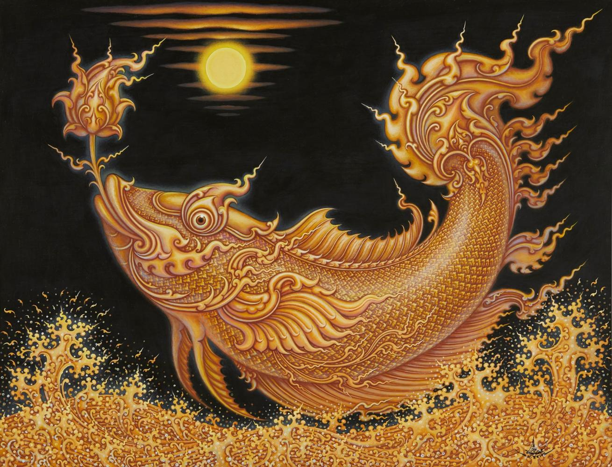
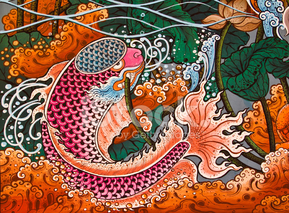
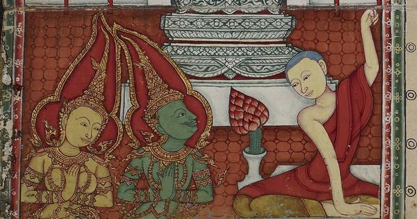
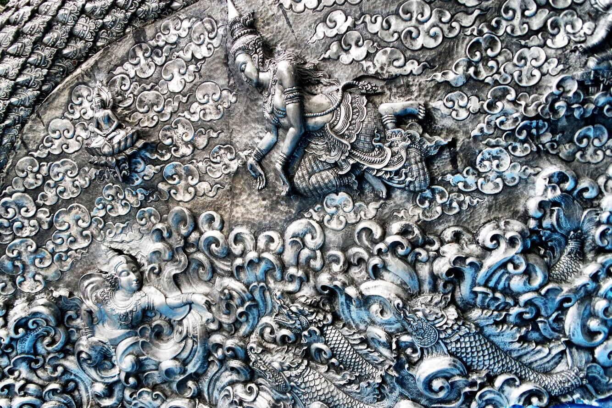
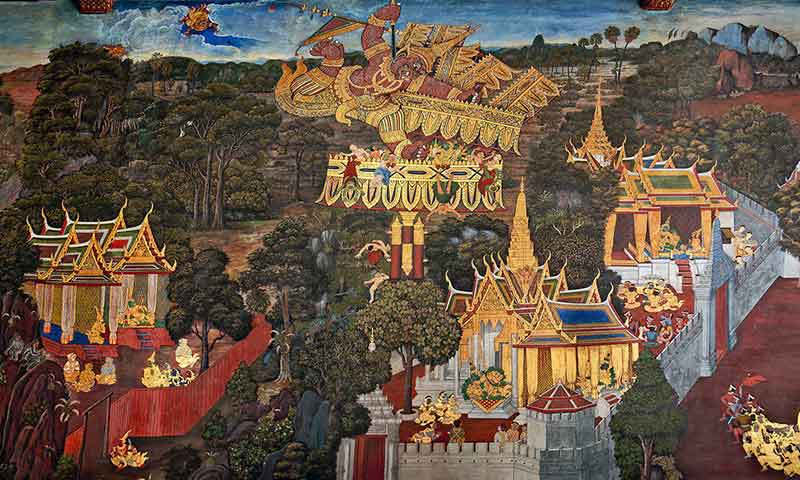
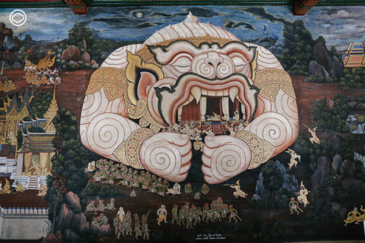
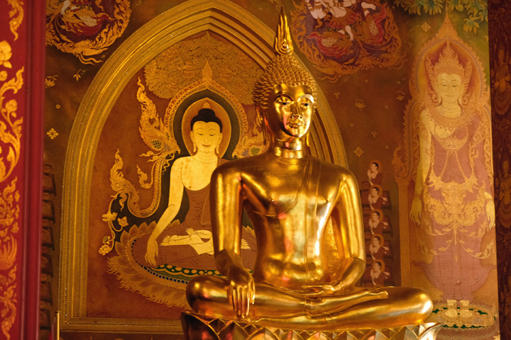
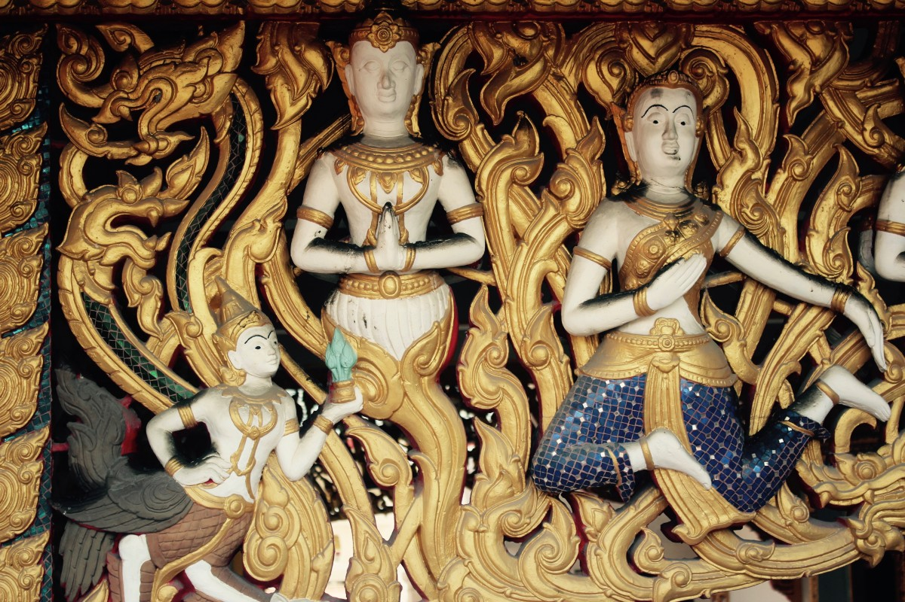
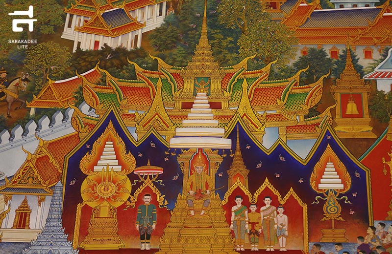

| Arts of Thailand |
| Contact Us | Pictures | Information |
Traditional Thai art and craft ranges from paintings and musical instruments to beautiful silk, silver wear, pottery, puppets, Khon masks, model warships, bronze wear, soap carving, sculptures, wood and stone carvings, ceramics and much more,Statues of the Buddha are probably the most widely-known Thai art form. The most famous of them is the immense golden ''Reclining Buddha'' in the Bangkok temple of Wat Pho,Traditional Thai style art has been prevailing only for mural paintings in Buddhist temples and houses or buildings of high respected noblemen and the residence of the Royal Thai monarchy. In the past, the ancient Thai painters only used traditional pigment powder to produce paintings.Traditional Thai painting is probably derived from Indian and Sri Lankan models and is mostly religious. The paintings, executed by anonymous monks or dedicated laypeople, are usually drawn on temple walls. Many wat contain mural paintings depicting the life of the Buddha or other Buddhist stories.Traditional Thai paintings have elaborate and unique patterns inspired by beauty found in nature. Usually, what artists observe in real life, whether it be a human being, animal, object, house and tree are distorted and interpreted in form of art,








